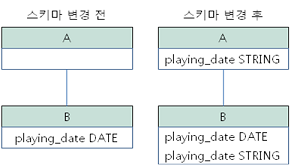

클래스 상속¶
이 장에서는 상속 개념을 설명하기 위해 테이블은 클래스(class), 칼럼은 속성(attribute), 타입은 도메인(domain)으로 표현한다.
CUBRID 데이터베이스에 있는 클래스들은 클래스 계층 구조를 가질 수 있으며, 계층 구조를 통해 속성과 메서드를 상속할 수 있다. 예를 들면, Employee 클래스로부터 속성과 메서드를 상속하는 Manager 클래스를 생성할 수 있다. 이때 Manager 클래스는 Employee 클래스의 서브클래스라고 하고, Employee 클래스는 Manager 클래스의 수퍼클래스라고 한다. 상속을 이용하면 이미 존재하는 클래스의 구조를 재사용하므로 간단하게 클래스를 생성할 수 있다.
CUBRID는 다중 상속을 허용하므로, 하나의 클래스는 두 개 이상의 클래스로부터 속성과 메서드를 상속할 수 있다. 그러나 다중 상속을 이용하면 메서드나 속성, 클래스를 삭제하거나 추가할 때 충돌이 발생할 수 있다.
클래스 충돌은 클래스와 수퍼클래스, 또는 두 개 이상의 수퍼클래스에 같은 이름의 속성이나 메서드가 존재할 때 발생한다. 예를 들어 클래스가 두 개 이상의 클래스로부터 이름과 도메인이 같은 속성을 상속할 가능성이 있다면, 어떤 클래스의 속성을 상속할 것인지 지정해야 한다. 이때 지정된 수퍼클래스가 삭제되면, 다른 수퍼클래스로부터 이름과 도메인이 같은 속성을 상속하도록 지정해야 한다. 일반적으로는 데이터베이스 시스템이 자동으로 이와 같은 문제를 해결하지만, 시스템과 다른 방법으로 해결하고 싶다면 상속 구문을 통해 직접 지정할 수 있다.
클래스가 두 개 이상의 클래스로부터 속성을 상속할 때 속성의 이름은 같지만 도메인은 다른 경우, 서브클래스는 좀 더 상세한 도메인을 가지는 속성을 자동으로 상속한다. 예를 들어, 이름이 같고 도메인이 클래스인 속성을 두 개의 수퍼클래스가 가지고 있다면, 클래스 계층 구조에서 더 하위에 존재하는 클래스의 속성을 상속한다. 이때 해당 속성의 도메인이 각각 문자열, 정수와 같이 시스템이 제공하는 기본 타입이라면, 상속은 불가능하다.
상속 시 발생하는 충돌과 이에 대한 해결 방법은 클래스 충돌 해결 에서 다룬다.
Note
상속 시 주의 사항은 다음과 같다.
클래스 이름은 데이터베이스 내에서 고유해야 한다. 존재하지 않는 클래스로부터 상속하는 클래스를 생성하면 에러가 발생한다.
한 클래스 내에서 메서드 이름과 속성의 이름은 고유해야 한다. 이름은 공백을 포함할 수 없으며 CUBRID의 예약어와 중복될 수 없다. 알파벳, ‘_’, ‘#’, ‘%’등은 클래스 이름에 포함될 수 있으나 첫 글자가 ‘_’ 가 될 수는 없다. 클래스 이름은 대/소문자를 구분하지 않고 소문자로 변환되어 시스템에 저장된다.
클래스의 암호화 (TDE) 여부는 상속되지 않는다. 자세한 내용은 테이블 암호화 (TDE) 을 참고한다.
Note
상속 구문에서 수퍼클래스의 이름을 알기 쉽게 명시하기 위해서 수퍼클래스 이름 앞에 사용자의 이름을 붙일 수 있다.
클래스 속성과 클래스 메서드¶
클래스 객체나 클래스에 저장된 모든 인스턴스의 공통적인 특징을 저장하기 위한 클래스 속성을 생성할 수 있다. 클래스 메서드는 클래스 객체에 대한 연산을 위해 생성된다. 클래스 속성이나 메서드를 생성하기 위해서는 속성이나 메서드 이름 앞에 CLASS 라는 키워드를 사용한다. 클래스 속성은 인스턴스와 관련이 있다기 보다는 클래스 자체와 관련이 있기 때문에 클래스 속성의 값은 하나의 값만 존재한다. 예를 들어, 클래스 속성은 클래스 메서드에 의해 결정되는 평균값을 저장하거나, 클래스가 생성된 타임스탬프 값을 저장할 수 있다. 클래스 메서드는 클래스 객체 자체에서 수행된다. 클래스 메서드는 클래스에 저장된 인스턴스 값을 집계하기 위해 사용될 수 있다.
서브클래스가 수퍼클래스를 상속할 때, 각 클래스는 클래스 속성을 위한 별도의 저장 공간을 가지므로 두 클래스의 클래스 속성은 서로 다른 값을 가질 수 있다. 따라서 수퍼클래스의 클래스 속성에 대한 값 변경은 서브클래스에 영향을 주지 않는다.
클래스 속성의 이름은 동일한 클래스 내의 인스턴스 속성의 이름과 같을 수 있다. 마찬가지로, 클래스 메서드의 이름도 동일한 클래스 내의 인스턴스 메서드의 이름과 같을 수 있다.
상속을 위한 순서 규칙¶
상속이 작용된 경우 다음 규칙들이 적용된다. 클래스라는 용어는 데이터베이스 내에서 클래스와 가상 클래스간 상속 개념을 서술할 때 일반적으로 사용된다.
수퍼클래스가 없는 객체의 경우, 속성 정의 순서는 CREATE 구문에서 속성을 정의한 순서와 동일하다(이 특징은 ANSI 표준이다).
수퍼클래스가 하나인 경우, 수퍼클래스의 속성들 다음에 지역적으로 생성된 속성이 위치한다. 수퍼클래스로부터 상속받은 속성들 간의 순서는 수퍼클래스 정의 시 정해진 순서를 따른다. 다중 상속인 경우, 클래스 정의 시 지정된 수퍼클래스의 순서에 따라 수퍼클래스의 속성 순서가 결정된다.
두 개 이상의 수퍼클래스가 동일한 클래스로부터 상속된 클래스라면, 두 수퍼클래스에 동시에 존재하는 속성은 한 번만 서브클래스에 상속된다. 이 때, 충돌이 발생하면 서브클래스는 첫 번째 수퍼클래스의 속성을 상속한다.
두 개 이상의 수퍼클래스들 사이에 이름 충돌이 발생할 경우, 이름 충돌을 해결하기 위해 INHERIT 구문을 사용하여 수퍼클래스의 속성 중 원하는 것만 상속받을 수 있다.
수퍼클래스의 속성의 이름이 INHERIT 구문의 별칭 기능을 통해 변경된 경우, 이름이 변경된 속성의 위치는 전과 동일하게 유지된다.
INHERIT 절¶
한 클래스의 서브클래스로 클래스를 생성하면 자동으로 클래스 계층 구조의 상위 클래스들의 모든 속성과 메서드를 상속받는다. 상속 시 발생할 수 있는 이름 충돌은 시스템에 의해 자동으로 처리되거나 사용자가 직접 해결할 수 있다. 사용자가 이름 충돌을 해결하고자 한다면 CREATE CLASS 구문에 INHERIT 구문을 추가하여 해결할 수 있다.
CREATE CLASS
.
.
.
INHERIT resolution [ {, resolution }_ ]
resolution:
{ column_name | method_name } OF superclass_name [ AS alias ]
INHERIT 구문에 상속하고 싶은 수퍼클래스의 속성이나 메서드 이름을 지정한다. AS 절을 사용하여 새로운 이름으로 상속받을 수도 있으므로, 다중 상속 구문에서 이름 충돌이 발생할 경우에서 충돌을 해결할 수 있다.
ADD SUPERCLASS 절¶
클래스의 상속은 클래스에 수퍼클래스를 추가하여 확장할 수 있다. 이미 존재하는 클래스에 수퍼클래스를 추가하여 두 클래스 사이에 관계를 생성한다. 수퍼클래스를 추가한다는 것이 새로운 클래스를 추가한다는 것을 의미하지는 않는다.
ALTER CLASS
.
.
.
ADD SUPERCLASS [ user_name.]class_name [ { , [ user_name.]class_name }_ ]
[ INHERIT resolution [ {, resolution }_ ] ] [ ; ]
resolution:
{ column_name | method_name } OF superclass_name [ AS alias ]
수퍼클래스를 추가할 클래스의 이름을 첫 번째 class_name 에 지정한다. 위 구문을 사용하여 수퍼클래스의 속성과 메서드를 상속할 수 있다.
새로운 수퍼클래스를 추가할 경우 이름 충돌이 발생할 수 있다. 데이터베이스 시스템의 의해서 이름 충돌이 자동으로 해결될 수 없는 경우, INHERIT 구문을 사용하여 수퍼클래스에서 상속받을 속성이나 메서드를 지정할 수 있다. 충돌이 발생한 속성이나 메서드를 모두 상속 받기 위해서는 별칭을 사용할 수 있다. 수퍼클래스에서 발생하는 이름 충돌에 대한 자세한 설명은 클래스 충돌 해결을 참조한다.
demodb 에 포함되어 있는 event 클래스를 상속하여 female_event 클래스를 생성한다면 다음과 같은 클래스 생성 문장이 수행된다.
CREATE CLASS female_event UNDER event;
DROP SUPERCLASS 절¶
클래스로부터 수퍼클래스를 삭제하는 것은 두 클래스 사이의 관계를 제거하는 것이다. 클래스에서 수퍼클래스를 삭제하면, 해당 클래스뿐만 아니라 그 클래스의 모든 서브클래스의 상속 관계 수정을 의미한다.
ALTER CLASS
.
.
.
DROP SUPERCLASS class_name [ { , class_name }_ ]
[ INHERIT resolution [ {, resolution }_ ] ] [ ; ]
resolution:
{ column_name | method_name } OF superclass_name [ AS alias ]
첫 번째 class_name 에는 수정할 클래스의 이름을 지정하고 두 번째 class_name 에는 삭제할 수퍼클래스의 이름을 지정한다. 수퍼클래스의 삭제에 의해 이름 충돌이 발생할 경우, 해결 방법은 클래스 충돌 해결 을 참조한다.
다음은 female_event 클래스가 event 클래스를 상속받은 예이다.
CREATE CLASS female_event UNDER event;
다음 ALTER 구문은 female_event 클래스에서 수퍼클래스 event 를 삭제하는 예이다. female_event 클래스가 event 클래스로부터 상속받은 모든 속성은 더 이상 존재하지 않는다.
ALTER CLASS female_event DROP SUPERCLASS event;
클래스 충돌 해결¶
데이터베이스의 스키마를 변경하면 상속 관련 클래스들 사이의 속성이나 메서드에서 충돌이 발생할 수 있다. 충돌하면 대부분, CUBRID에서 자동으로 해결되지만 그렇지 않은 경우에는 사용자가 직접 충돌을 해결해야 한다. 따라서 스키마를 변경하기 전에, 충돌이 발생할 가능성을 면밀히 조사해야 한다.
두 가지 형태의 충돌이 데이터베이스 스키마를 손상시킬 수 있다. 하나는 서브클래스의 스키마가 변경되어 서브클래스와 충돌이 발생하는 경우이고 또 다른 하나는 수퍼클래스가 변경되어 서브클래스와 충돌이 발생하는 것이다. 다음은 클래스들 간 충돌을 유발하는 연산들이다:
속성 추가
속성 삭제
수퍼클래스의 추가
수퍼클래스의 삭제
클래스 삭제
위의 연산들로 인해 서브클래스와 충돌이 발생할 경우, CUBRID는 충돌이 발생한 서브클래스에 대해 기본 해결 방법을 적용한다. 따라서 데이터베이스 스키마는 항상 일관된 상태를 유지한다.
해결 지시자¶
데이터베이스 스키마를 변경하면, 기존 클래스나 속성 간의 충돌이나 상속 충돌이 발생할 수 있다. 시스템이 자동으로 충돌을 해결하지 못하거나 시스템의 해결 방법이 마음에 들지 않으면 ALTER 구문의 INHERIT 절을 사용하여 충돌을 해결하는 방법을 제시할 수 있다(흔히 해결 지시자라고 한다).
시스템이 자동적으로 충돌을 해결할 때는 상속이 존재한다면 기본적으로 앞의 상속을 유지한다. 스키마 변경으로 인해 앞의 해결 방법이 무효화된다면 시스템은 또 다른 해결 방법을 임의로 선택할 것이다. 따라서 시스템이 충돌을 해결하는 방법을 항상 예측할 수는 없으므로 가급적이면 스키마 설계 단계에서 속성이나 메서드의 과도한 재사용을 피해야 한다.
다음에서 충돌과 관련하여 논의하고 있는 사항은 속성과 메서드에 공통적으로 적용된다.
ALTER [ class_type ] class_name alter_clause
[ INHERIT resolution [ {, resolution }_ ] ] [ ; ]
resolution:
{ column_name | method_name } OF superclass_name [ AS alias ]
수퍼클래스 충돌¶
수퍼클래스 추가¶
ALTER CLASS 구문에서 INHERIT 절은 선택 사항이지만 클래스의 변경에 의해 충돌이 발생할 경우에는 반드시 사용해야 하는 문장이다. INHERIT 절 다음에 하나 이상의 해결방법을 명시할 수 있다.
superclass_name에는 충돌이 발생했을 때 새로 상속받을 속성(칼럼)이나 메서드를 가지는 수퍼클래스의 이름을 명시하고, column_name이나 method_name에는 상속받을 속성이나 메서드의 이름을 명시한다. 상속받을 속성이나 메서드의 이름을 변경할 필요가 있는 경우에는 AS 절을 이용하여 별칭을 지정할 수 있다.
다음 예는 demodb 의 event 클래스와 stadium 클래스를 상속받아서 soccer_stadium 클래스를 만든다. event 클래스와 stadium 클래스는 모두 name, code 속성을 가지고 있기 때문에 INHERIT 을 사용하여 상속받을 속성을 지정해야 한다.
CREATE CLASS soccer_stadium UNDER event, stadium
INHERIT name OF stadium, code OF stadium;
두 수퍼클래스 event, stadium이 name이라는 속성을 가지고 있고, soccer_stadium 클래스가 두 속성을 모두 상속받으려면, stadium의 name은 그대로 상속 받고 event 클래스의 name은 INHERIT의 alias 절을 사용하여 이름을 변경하여 상속받을 수 있다.
아래 예는 stadium 클래스의 name은 그대로 name으로 상속받고, event 클래스의 name은 purpose라는 별명으로 상속받는다.
ALTER CLASS soccer_stadium
INHERIT name OF event AS purpose;
수퍼클래스 삭제¶
INHERIT을 사용하여 명시적으로 속성이나 메서드를 상속한 수퍼클래스를 삭제하면 서브클래스에서 다시 이름 충돌이 발생할 수 있다. 이 경우에는 삭제할 때 명시적으로 상속받을 속성이나 메서드를 지정해야 한다.
CREATE CLASS a_tbl(a INT PRIMARY KEY, b INT);
CREATE CLASS b_tbl(a INT PRIMARY KEY, b INT, c INT);
CREATE CLASS c_tbl(b INT PRIMARY KEY, d INT);
CREATE CLASS a_b_c UNDER a_tbl, b_tbl, c_tbl INHERIT a OF b_tbl, b OF b_tbl;
ALTER CLASS a_b_c
DROP SUPERCLASS b_tbl
INHERIT b OF a_tbl;
위의 예는 a_tbl, b_tbl, c_tbl 클래스를 상속받아서 a_b_c 클래스를 만들고, 그 중 b_tbl 클래스를 수퍼클래스에서 제거한다. b_tbl 클래스에서 a 와 b를 명시적으로 상속받았기 때문에, 수퍼클래스에서 제거하기 전에 a 와 b 의 이름 충돌을 해결해야 한다. 하지만, a는 삭제할 b_tbl 클래스 외에 a_tbl 클래스에만 존재하므로 명시적으로 지정할 필요는 없다.
호환되는 도메인¶
충돌하는 속성이 호환되는 도메인이 아니면, 클래스 상속 구문을 수행할 수 없다.
예들 들어, 정수 타입의 phone 이라는 속성을 가지는 수퍼클래스를 상속받은 클래스에는 문자열 타입의 phone 속성을 가지는 또 다른 수퍼클래스를 추가할 수 없다. 두 수퍼클래스의 phone 속성의 타입이 모두 문자열이거나 정수라면 INHERIT 구문을 이용하여 충돌을 해결하면서 수퍼클래스를 추가할 수 있다.
이름은 같지만 도메인이 다른 속성을 상속할 때 도메인 호환성이 점검된다. 이 경우, 클래스 상속 계층 구조의 하위 클래스를 도메인으로 갖는 속성이 자동으로 상속된다. 상속받을 속성들의 도메인이 호환 가능할 때, 상속 관계가 만들어지는 클래스에서 충돌이 해결되어야 한다.
서브클래스 충돌¶
클래스의 변경 사항은 모든 서브클래스에 자동으로 전파된다. 변화된 내용으로 인해 서브클래스에 문제가 발생한다면, CUBRID가 문제되는 서브클래스 충돌(subclass conflict)을 처리하고 시스템이 자동으로 충돌을 해결했다는 경고 메시지를 보여준다.
수퍼클래스의 추가, 속성과 메서드의 생성, 삭제로 인해 서브클래스 충돌이 발생할 수 있다. 클래스의 변경 사항은 모든 서브클래스에 영향을 미친다. 변경된 사항이 자동 전파되는 특징으로 인해 정상적인 변경도 하위 서브클래스들에 부작용을 유발할 수 있다.
속성과 메서드의 추가¶
서브클래스 충돌의 가장 단순한 형태는 속성을 추가할 때 발생한다. 한 수퍼클래스에 추가된 속성이 또 다른 수퍼클래스에서 이미 상속 받고 있는 속성의 이름과 동일하다면 서브클래스 충돌이 발생할 것이다. 이러한 경우 CUBRID는 이 문제를 자동으로 해결한다. 즉, 추가된 속성은 동일한 이름의 속성을 이미 상속하고 있는 모든 서브클래스에 상속되지 않는다.
다음은 event 클래스에 속성을 추가하는 예이다. soccer_stadium 클래스는 수퍼클래스로 event 와 stadium 클래스를 가지며, stadium 클래스에는 nation_code 속성이 이미 존재한다. 따라서 event 클래스에 nation_code 속성을 추가하면 soccer_stadium 클래스에서는 nation_code 속성과 관련하여 충돌이 발생하지만, CUBRID는 이 충돌을 자동으로 해결한다.
ALTER CLASS event
ADD ATTRIBUTE nation_code CHAR(3);
만약 event 가 soccer_stadium 의 수퍼클래스에서 제거되면, stadium 클래스의 cost 속성이 자동으로 상속될 것이다.
속성과 메서드의 삭제¶
속성이 삭제되면, INHERIT 구문을 사용하여 그 속성을 상속받도록 한 문장의 효력 역시 사라진다. 속성이 삭제됨으로써 충돌이 발생한다면 시스템은 새로운 상속 계층 구조를 결정할 것이다. 만약, 시스템이 결정한 상속 계층 구조가 마음에 들지 않으면 ALTER 구문의 INHERIT 절을 사용하여 사용자가 계층 구조를 정할 수도 있다. 아래의 경우가 이러한 충돌에 해당할 것이다.
세 개의 서로 다른 수퍼클래스로부터 속성을 상속 받는 서브클래스가 있다고 가정하자. 모든 수퍼클래스에서 이름 충돌이 발생하였고, 이 문제를 해결하기 위해 명시적으로 상속된 속성이 삭제되었다면 나머지 두 개의 속성 중 하나가 자동으로 상속될 것이다.
다음은 서브클래스 충돌의 예이다. 클래스 B, C, D 는 클래스 E 의 수퍼클래스이고 세 개의 수퍼클래스는 이름이 team 이고 도메인이 team_event 인 속성을 가진다. 클래스 E 는 다음과 같이 C 클래스의 place 속성을 상속받으며 생성되었다.
create class E under B, C, D
inherit place of C;
이 경우의 상속 계층 구조는 다음과 같다:

클래스 C 를 수퍼클래스에서 삭제하기로 결정했다고 가정하자. 이 삭제는 상속 계층 구조의 변경을 요구할 것이다. 나머지 B, D 클래스의 game 속성의 도메인이 동일 레벨이므로 시스템은 둘 중 하나를 임의로 선택하여 상속할 것이다. 시스템의 임의 선택을 원하지 않으면 클래스 변경 시에 INHERIT 구문을 사용하여 상속받을 클래스를 지정할 수 있다.
ALTER CLASS E INHERIT game OF D;
ALTER CLASS C DROP game;
Note
한 수퍼클래스의 game 속성의 도메인이 event 이고, 또 다른 수퍼클래스의 속성이 team_event 인 경우, team_event 가 event 에 비해 더 상세하므로(상속 계층 구조상 더 하위에 존재하므로) team_event 를 도메인으로 가지는 속성이 상속될 것이다. 이 경우 사용자가 강제적으로 event 를 도메인으로 가지는 속성을 상속할 수는 없다. event 클래스는 team_event 보다 상속 계층 구조의 상위에 존재하기 때문이다.
스키마 불변성¶
데이터베이스 스키마 불변성은 항상(스키마 변경 전/후) 스키마가 지켜야 하는 스키마의 특징이다, 클래스 계층 불변성, 이름 불변성, 상속 불변성, 일관성의 불변성 등 네 가지 유형의 불변성이 존재한다.
클래스 계층 불변성¶
하나의 루트를 가지며 연결된 클래스들이 방향성을 갖는 비순환 그래프(DAG: directed acyclic graph)인 클래스 계층 구조를 정의한다. 즉, 루트를 제외한 모든 클래스는 하나 이상의 수퍼클래스를 가지고 자기 자신이 수퍼클래스가 될 수 없다. DAG의 루트는 object라는 시스템 정의 클래스이다.
이름 불변성¶
클래스 계층 구조상의 모든 클래스는 고유한 이름을 가져야 하고, 클래스 내의 모든 속성 역시 고유한 이름을 가져야 함을 의미한다. 즉, 동일한 이름의 클래스를 생성하거나 한 클래스에서 동일한 이름의 속성, 메서드를 생성하는 것은 규칙에 어긋나므로 거부된다.
이름 불변성은 RENAME 한정어(qualifier)에 의해 재정의된다. RENAME 한정어는 속성 또는 메서드의 이름이 변경될 수 있도록 한다.
상속 불변성¶
한 클래스는 모든 수퍼클래스의 모든 속성들과 메서드들을 상속해야 한다는 것이다. 이 불변성은 출처 한정어, 충돌 한정어, 도메인 한정어 등 세 개의 한정어로 구분될 수 있다. 상속 이후, 상속된 속성들과 메서드들은 이름이 변경될 수 있다. 기본값 또는 공유값 속성의 경우에, 기본값과 공유값은 수정될 수 있다. 상속 불변성은 이러한 변경들이 속성들과 메서드들을 상속한 모든 클래스에 전파될 것이라는 것을 의미한다.
출처 한정어
클래스 S 라는 클래스를 상속한 클래스들을 클래스 C 가 다시 상속받을 경우, 클래스 S 로부터 각각의 클래스에 상속된 속성(메서드)들은 오직 하나씩만 클래스 C 에 상속될 수 있다는 것을 의미한다. 다시 말하면, 만일 한 속성(메서드)이 클래스 S 에 먼저 정의되었고, 다른 클래스들에 의해 상속되었다면, 그 속성(메서드)이 여러 개의 서브클래스에 존재하지만 실질적으로는 한 속성(메서드)인 것이다. 따라서, 한 클래스가 출처가 같은 속성(메서드)를 가지는 클래스들로부터 다중 상속 받는 경우, 오직 한 속성(메서드)의 모습만을 상속한다.
충돌 한정어
출처는 다르지만 동일한 이름을 가지는 속성(메서드)을 가지는 두 개 이상의 클래스를 클래스 C 가 상속한다면, 클래스 C 는 하나 이상의 클래스를 모두 상속받을 수 있다는 것이다. 동일한 이름의 속성(메서드)를 상속받으려면 이름 불변성을 위반하므로 이름 변경이 필요하다.
도메인 한정어
상속된 속성의 도메인이 그 도메인의 서브클래스로 변환될 수도 있음을 의미한다.
일치 불변성¶
데이터베이스 스키마는 스키마를 변경하는 순간을 제외하고 항상 스키마 불변성과 모든 규칙들을 준수해야 한다는 것이다.
스키마 변경 규칙¶
스키마 불변성에서 항상 유지되어야 하는 스키마의 특성들에 대해 언급하였다.
스키마를 변경하는 방법은 몇 가지가 존재하며 이 방법들은 스키마 불변성을 유지해야 한다. 예를 들어, 수퍼클래스를 하나만 가지는 클래스에서 그 수퍼클래스와의 관계를 제거한다고 가정하자. 수퍼클래스와의 관계가 삭제되면 그 클래스는 object 클래스의 직속 서브클래스가 되거나 만약 사용자가 그 클래스는 적어도 하나의 수퍼클래스를 가져야 한다고 명시했다면 그 삭제는 거부될 것이다. 이러한 선택은 임의적인 측면이 있지만, 스키마를 변경하는 방법 중 하나를 선택하기 위한 몇 가지 규칙을 가지는 것은 사용자나 데이터베이스 설계자에게 분명 유용할 것이다.
충돌 해결 규칙(conflict-resolution rules), 도메인 변경 규칙(domain-change rule), 클래스 계층 규칙(class-hierarchy rule)의 세 가지 형태 규칙이 적용된다.
일곱 개의 충돌 해결 규칙은 상속 불변성을 강화한다. 대부분의 스키마 변경 규칙은 이름 충돌 때문에 필요하다. 도메인 변경 규칙은 상속 불변성의 도메인 해결을 강화한다. 클래스 계층 규칙은 클래스 계층 불변성을 강화한다.
충돌 해결 규칙¶
규칙 1: 클래스 C 의 속성(메서드) 이름이 수퍼클래스 S 의 속성 이름과 충돌이 발생한다면(이름이 같다면), 클래스 C 의 속성이 사용된다. S 의 속성은 상속되지 않는다.
어떤 클래스가 하나 이상의 수퍼클래스를 가지는 경우, 속성들이 의미적으로 같은지, 어떤 속성을 상속받을 것인지를 결정하기 위해 각 수퍼클래스가 가지는 속성(메서드)들의 세가지 측면이 고려되어야 한다. 속성(메서드)의 세 가지 측면은 이름, 도메인, 출처이다. 아래 표는 세 가지 측면에서 두 수퍼클래스에서 발생할 수 있는 여덟 가지 조합이다. 사례 1의 경우(두 개의 서로 다른 수퍼클래스의 속성이 이름, 도메인, 출처가 모두 같은 경우), 두 속성은 동일하므로 서브클래스는 둘 중 하나만 상속받아야 한다. 사례 8의 경우(두 개의 서로 다른 수퍼클래스의 속성이 이름, 도메인, 출처가 모두 다른 경우), 두 속성은 완전히 다른 속성이므로 모두 상속받아야 한다.
사례
이름
도메인
출처
1
같음
같음
같음
2
같음
같음
다름
3
같음
다름
같음
4
같음
다름
다름
5
다름
같음
같음
6
다름
같음
다름
7
다름
다름
같음
8
다름
다름
다름
8개의 사례 중 5개(1, 5, 6, 7, 8)는 명확한 의미를 가지고 있다. 상속 불변성은 이러한 경우의 충돌을 해결하기 위한 가이드 라인이다. 나머지 사례(2, 3, 4)의 경우, 충돌을 자동으로 해결하는 것은 매우 어렵다. 규칙 2, 규칙 3이 이러한 충돌의 해결 방안이 될 수 있다.
규칙 2: 두 개 이상의 수퍼클래스가 출처는 다르지만 같은 이름과 도메인의 속성(메서드)을 가질 때, 사용자가 충돌 해결 구문을 사용할 경우 하나 이상의 속성(메서드)을 상속할 수 있다. 충돌 해결 구문을 사용하지 않는다면 시스템은 임의의 어느 한 속성을 선택하여 상속할 것이다.
이 규칙은 위 표의 사례 2 형태의 충돌을 해결하기 위한 가이드 라인이다.
규칙 3: 두 개 이상의 수퍼클래스가 출처와 도메인은 다르지만 이름이 같은 속성(메서드)을 가질 때, 더 상세한 도메인(상속 계층 구조의 하위에 있는)을 가지는 속성(메서드)이 상속될 것이다. 도메인들 사이에 상속 관계가 없으면 스키마 변경은 허용되지 않는다.
이 규칙은 사례 3, 4 형태의 충돌을 해결하기 위한 가이드 라인이다. 규칙 3과 규칙 4가 충돌하는 경우, 규칙 3이 규칙 4보다 우선한다.
규칙 4: 사용자는 사례 3, 4의 경우를 제외하면 어떠한 변경도 가능하다. 뿐만 아니라, 서브클래스에 대한 충돌 해결이 수퍼클래스에 대한 변경을 초래할 수 없다.
규칙 4의 철학은 “상속은 서브클래스가 수퍼클래스로부터 부여받은 권리로 서브클래스의 변경이 수퍼클래스에 영향을 줄 수 없다”라는 것이다. 규칙 4는 클래스 C 와 수퍼클래스들 사이에 발생하는 충돌을 해결하기 위해 수퍼클래스의 포함된 속성(메서드)의 이름을 변경할 수 없다는 것을 의미한다. 규칙 4의 예외는 스키마 변경이 사례 3, 4의 충돌을 유발하는 경우이다.
예를 들어, 클래스 A 가 클래스 B 의 수퍼클래스이고, 클래스 B 가 타입이 DATE 인 playing_date 라는 속성을 가진다고 가정하자. 클래스 A 에 STRING 타입의 playing_date 라는 이름의 속성을 추가하면, 클래스 B 의 playing_date 속성과 충돌이 발생할 것이다. 이것이 사례 4의 경우다. 이 충돌을 해결하는 정확한 방법은 사용자가 클래스 B 가 클래스 A 의 playing_date 속성을 상속하도록 명시하는 것이다. 메서드가 속성을 참조한다면, 클래스 B 의 사용자는 올바른 playing_date 속성을 참조하도록 메서드를 적절히 변경할 필요가 있다. 클래스 A 의 스키마 변경이 허용되지 않는 이유는 클래스 B 의 사용자가 스키마 변경으로 인해 발행하는 충돌을 해결하기 위해 명시적인 구문을 기술하지 않으면, 스키마가 일관되지 않은 상태가 되기 때문이다.

규칙 5: 수퍼클래스의 스키마를 변경함으로써 충돌이 발생하면, 그 변경이 규칙들을 위반하지 않는 한 원래의 해결 방법이 유지된다. 그러나 스키마 변경이 원래의 해결 방법을 무효화한다면 시스템은 다른 해결 방법을 적용할 것이다.
규칙 5는 충돌이 없는 클래스에 충돌을 유발하거나, 앞의 충돌을 해결하는 방법을 무효화하는 상황을 책임지는 규칙이다.
이러한 경우는 수퍼클래스에 속성(메서드)이 추가되거나 수퍼클래스로부터 상속받은 속성(메서드)이 삭제될 때, 속성(메서드)의 이름 또는 도메인이 변경되거나, 수퍼클래스가 삭제되는 상황이다. 규칙 5는 규칙 4의 철학과 일치한다. 즉, 사용자는 그 클래스를 상속한 서브클래스가 상속받은 속성(메서드)에 어떠한 영향을 미칠지 신경 쓰지 않고 자유롭게 클래스를 변경할 수 있다.
클래스 C 의 수퍼클래스의 스키마를 변경할 때, 예전에 다른 클래스와 충돌이 발생하여 그 클래스의 속성을 상속하기로 결정했다면 클래스 C 의 속성(메서드) 손실을 초래할 수 있다. 이 경우, 예전에 충돌했던 속성(메서드) 중 하나를 대신 상속 받아야 한다.
수퍼클래스의 스키마 변경은 속성(메서드)과 클래스 C 의 (지역적으로 선언되거나 상속받은) 속성(메서드)의 충돌을 일으킬 수 있다. 이 경우, 시스템은 규칙 2나 규칙 3을 적용하여 충돌을 자동으로 해결하고 사용자에게 알릴 수도 있다.
수퍼클래스와의 관계를 추가하거나 삭제함으로써 새로운 충돌이 발생하는 상황은 규칙 5를 적용할 수 없다. 클래스에 대한 수퍼클래스 추가/삭제는 클래스 내에서 제어되어야 한다. 즉, 사용자가 명시적인 해결 방법을 제시해야 한다.
규칙 6: 속성이나 메서드의 변경은 충돌이 발생하지 않는 서브클래스들에게만 전파된다.
이 규칙은 규칙 5와 상속 불변성의 적용을 제한한다. 규칙 2, 규칙 3을 적용하여 충돌을 탐지하고 해결할 수 있다.
규칙 7: 클래스 R 의 속성이 클래스 C 를 도메인으로 사용해도 클래스 C 를 삭제할 수 있다. 이 경우, 클래스 C 를 도메인으로 사용하는 속성의 도메인이 object로 변경 될 수 있다.
도메인 변경 규칙¶
규칙 8: 클래스 C 의 한 속성의 도메인이 D 에서 D 의 수퍼클래스로 변경되었다면 새로운 도메인은 클래스 C 가 속성을 상속받은 수퍼클래스의 대응하는 도메인보다 더 일반적이지 않다. 다음 예는 이 규칙의 원리를 설명한다.
데이터베이스에 player 라는 속성을 가지는 game 클래스와 game 을 상속한 female_game 클래스가 존재한다고 가정하자. game 의 player 속성의 도메인은 athlete 클래스이지만 female_game 의 player 속성의 도메인은 athlete 의 서브클래스인 female_athlete 클래스로 변경되었다. 다음 그림이 이러한 관계를 보여주고 있다. 그러나 female_game 의 player 속성의 도메인은 female_athlete 의 수퍼클래스인 athlete 로 다시 변경될 수 있다.

클래스 계층 규칙¶
규칙 9: 수퍼클래스가 없는 클래스는 object의 직속 서브클래스가 된다. 클래스 계층 규칙은 수퍼클래스가 없는 클래스의 특성을 정의한다. 수퍼클래스 없이 클래스를 생성한다면 object를 수퍼클래스가 갖게 된다. 만약 클래스 C 의 고유한 수퍼클래스인 S 를 삭제하면 클래스 C 는 object의 직속 서브클래스가 된다.